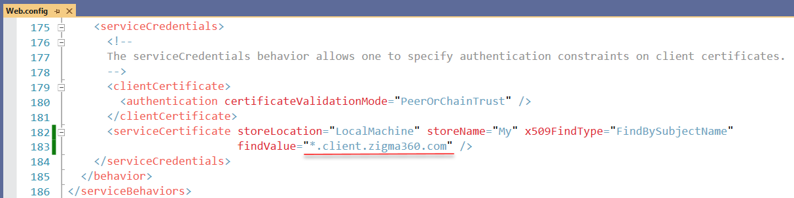

Wildcard SSL certificate for Zigma cloud service using Let’s Encrypt¶
In this page will cover, how to generate a wildcard SSL certificate for the *.client.zigma360.com domain using Let’s Encrypt free service and a PowerShell module Posh-ACME.
Requirements and Platform Support¶
- Supports Windows PowerShell 5.1 (Desktop edition) with .NET Framework 4.7.1 or later
- Supports PowerShell 6.2 or later (Core edition) on all supported OS platforms.
- Requires
FullLanguagelanguage mode
To check PowerShell version: $PSversionTable or get-host|Select-Object version
Installation Posh-ACME (Stable)¶
The latest release can found in the PowerShell Gallery. Installing is easy from the gallery using Install-Module. See Installing PowerShellGet if you run into problems with it.
# install for all users (requires elevated privs)
Install-Module -Name Posh-ACME -Scope AllUsers
# install for current user
Install-Module -Name Posh-ACME -Scope CurrentUser
Picking a Server¶
Before we begin, let's configure our ACME server to be the Let's Encrypt Production server.
Set-PAServer LE_PROD
Note
LE_PROD is a shortcut for the Let's Encrypt Production server's directory URL.
Other currently supported shortcuts include LE_STAGE, BUYPASS_PROD, BUYPASS_TEST, and ZEROSSL_PROD.
Warning
If the Set-PAServer command executes with an error Set-PAServer : Errors occurred wile loading the format data file...xml is not digitally signed.. you will probably need to run this command as administrator Set-ExecutionPolicy RemoteSigned -Force and try to execute the previous command again.
Your First Certificate¶
The bare minimum you need to request a certificate is just the domain name.
Assuming you've reviewed the TOS link from before, add -AcceptTOS to the original command to proceed. You only need to do this once when creating a new account. You also probably want to associate an email address with this account so you can receive certificate expiration notifications (replace admin@example.com with your one). So let's do that even though it's not required.
New-PACertificate *.client.zigma360.com -AcceptTOS -Contact 'admin@example.com'
Note
Multiple email addresses per account are supported. Just pass it an array of addresses.
Because you didn't specify a plugin, it will default to using the Manual DNS plugin. That manual plugin will also be prompting you to create a DNS TXT record to answer the ACME server's validation challenge for the domain.
At this point, you can either press Ctrl+C to cancel the process and modify your command or go ahead and create the requested TXT record and hit any key to continue. We'll cover plugins next, so for now create the record manually and press a key to continue. If you run into problems creating the TXT record, check out Troubleshooting DNS Validation.
The command will sleep for 2 minutes by default to allow the DNS changes to propagate. Then if the ACME server is able to properly validate the TXT record, the final certificate files are generated and the command should output the details of your new certificate. Only a subset of the details are displayed by default. To see them all, run Get-PACertificate | fl. The files generated in the output folder should contain the following:
- cert.cer (Base64 encoded PEM certificate)
- cert.key (Base64 encoded PEM private key)
- cert.pfx (PKCS12 container with cert+key)
- chain.cer (Base64 encoded PEM with the issuing CA chain)
- chainX.cer (Base64 encoded PEM with alternate issuing CA chains)
- fullchain.cer (Base64 encoded PEM with cert+chain)
- fullchain.pfx (PKCS12 container with cert+key+chain)
Posh-ACME is only designed to obtain certificates, not deploy them to your web server or service. The certificate details are written to the pipeline so you can either save them to a variable or pipe the output to another command. Posh-ACME.Deploy is a sister module containing some example deployment functions for common services to get you started. But ultimately, it's up to you how you want to deploy your certificates.
The password on the PFX files is poshacme because we didn't override the default with -PfxPass or -PfxPassSecure. If you're running PowerShell with elevated privileges on Windows, you can also add the -Install switch to automatically import the certificate into the local computer's certificate store.
So now you have a certificate and that's great! But Let's Encrypt certificates expire relatively quickly (90 days).
Updating an existing certificate for the zigma4clients azure cloud service¶
All certificates issued by Let's Encrypt expire in 90 days, so we need to renew it in advance and update the old one in the service. The service finds certificate by name and it means there is no need to change any settings. 
Renewals¶
The module saves all of the parameters associated with an order and re-uses the same values to renew it. Let's Encrypt currently caches authorizations for roughly 30 days, so the forced renewal won't need to go through validating the challenges again. Run this command to renew the certificate:
Submit-Renewal -Force -NoSkipManualDns
If the renewal is successfully completed you can see something like this:
Subject NotAfter KeyLength Thumbprint AllSANs
------- -------- --------- ---------- -------
CN=*.client.zigma360.com 3/10/2022 8:34:28 AM 2048 39EB0268B6FD669F7D4A879813B117F7635C50FE {*.client.zigma360.com}
If you see this message then it means you need to update a TXT record for your domain:
Please create the following TXT records:
------------------------------------------
_acme-challenge.client.zigma360.com -> 5JzcKSxpnV7P0uCSyQ6NMwYj79llkrHYR3io5kv9Akc
------------------------------------------
Press any key to continue.:
To do so, open your domain configuration panel for example https://domainname.shop/admin?id=870947&edit=dns&advanced=1
find the _acme-challenge.client.zigma360.com TXT record and put a new value.
Then go back to the PowerShell window and press any key, wait until you get the message about successfully renewal.
Run the command to show the path to the certificate:
Get-PACertificate | fl
Deployment¶
Azure key vault zigma4clientskv is used to store the SSL certificate. What we need to do is:
- open the zigma4clientskv from the Azure portal
- open the Certificates section
- select the Wildcard-client-zigma360-com certificate
- click the New version button
- choose Method of Certificate Creation: Import
- select a generated earlier new certificate, put the
poshacmepassword or use your own and click the Create button
Then open the zigma4clients cloud service to update link to the certificate:
- open the Configuration sections
- find the
Certificatesetting with theCertificate1name and update thethumbprintattribute to a thumbprint of the new certificate - click the Save button
The certificate is updated and the service takes it immediately is use.